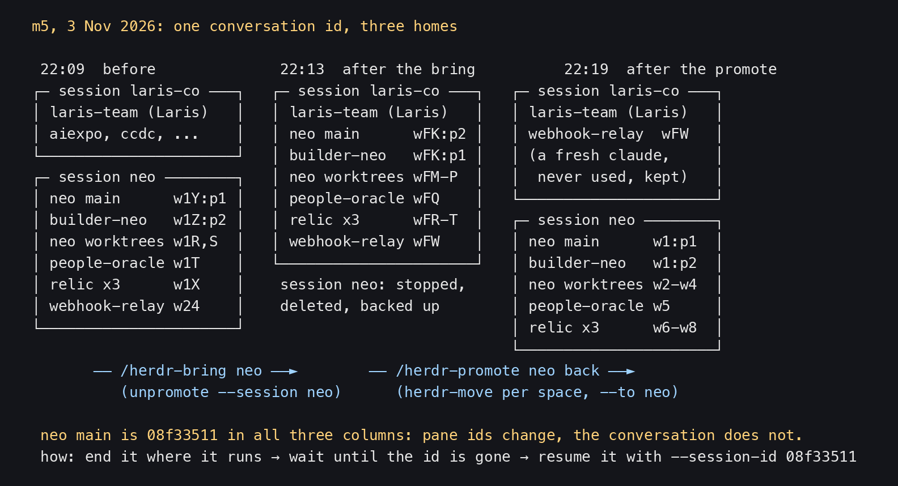
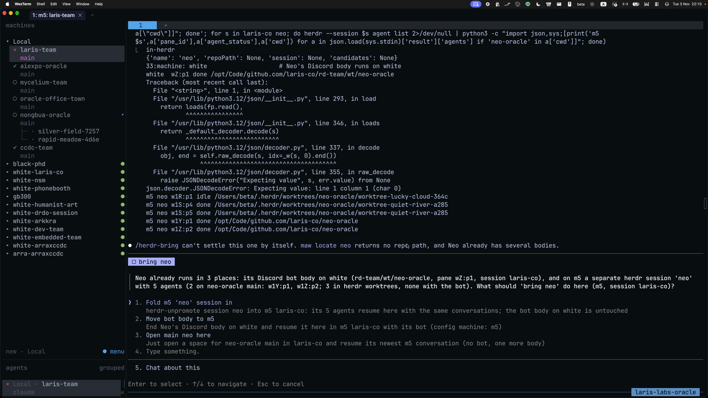
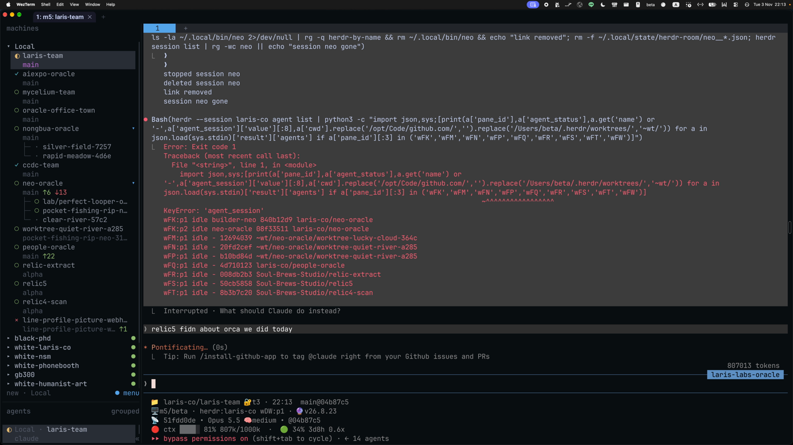
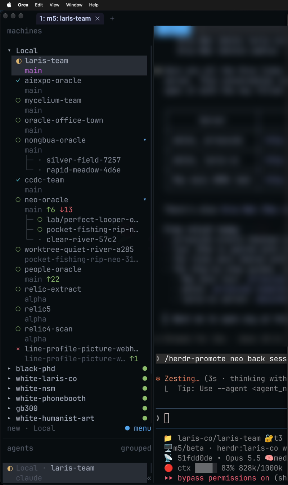
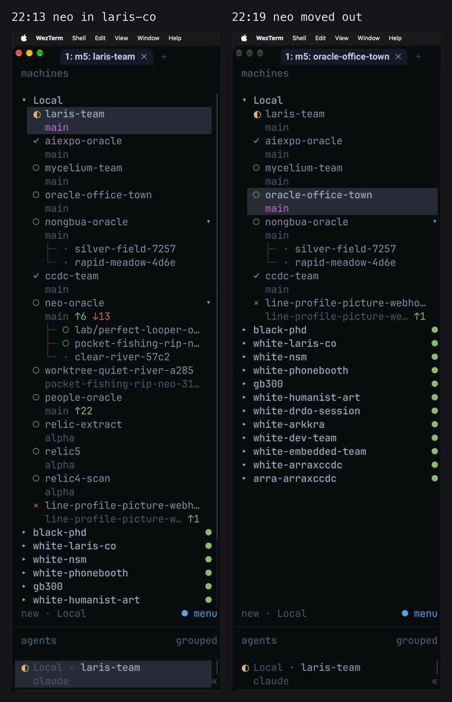

1. ภาพรวม

- herdr หนึ่ง session = หนึ่ง server บนเครื่องหนึ่ง
herdr pane moveย้าย pane ได้แค่ใน session เดียวกัน - จะย้าย agent ไป session อื่น ต้อง "ปิดที่นี่ เปิดต่อที่โน่น" ด้วย Claude session id ตัวเดิม ประวัติการคุยยังอยู่ครบ
- สิ่งที่เปลี่ยน: pane id (เช่น
w1Y:p1→wFK:p2→w1:p1), ชื่อ agent, room - สิ่งที่ไม่เปลี่ยน: session id ของบทสนทนา (Neo main คือ
08f33511ทั้งสามช่วง)
2. ห้าคำสั่ง ต่างกันตรงไหน
/herdr-bring <handle>: เอา maw handle (oracle ที่ maw รู้จัก) เข้ามามี space ของตัวเองใน herdr ถ้ามีประวัติ Claude ของ repo นั้นจะ resume ต่อ ถ้ามี tmux session ของ maw ที่ยังรันอยู่และว่าง จะปิดมันก่อน ถ้าไม่มีอะไรเลยจะเริ่มใหม่/herdr-bring-beside <who>: ดึง pane หนึ่งมาไว้ข้างฉันในแท็บเดียวกัน (ขวาหรือล่าง) ใช้herdr pane moveตรง ๆ agent ไม่ได้ปิด ได้แค่ใน session เดียวกัน/herdr-move <oracle>: ย้าย oracle หนึ่งตัว (ทุก agent ของ repo นั้น ทั้ง main และ worktree) ไป session ของตัวเอง ชื่อตั้งต้นคือชื่อ repo ตัด-oracleออก เป็นเครื่องมือที่คำสั่งอื่นเรียกใช้/herdr-promote <team|repo|wXX>: ให้ทีม repo หรือ space หนึ่ง มี session ของตัวเอง ทีม (<x>-team) พา desk และทุกwt/<oracle>ไปด้วย ข้างในเรียกherdr-move/herdr-unpromote <team|oracle|session>: พากลับ ค่าตั้งต้นคือกลับมา session ของคนเรียก ตั้งชื่อ pane ให้ แล้วลบ session ต้นทางที่ว่างแล้ว- ไม่ใช่การย้าย แต่ชื่อคล้ายกัน:
/herdr-incubate <oracle>ตัด worktree ของ repo ฉัน เพื่อทำงานให้ oracle อื่น ไม่ได้เปิด repo ของมัน
↓ 3. เคล็ดลับเดียว: จบที่เดิม แล้ว resume ด้วย id เดิมbring = เอาเข้ามา · bring-beside = มาข้างฉัน · move = oracle เดียวไปบ้านตัวเอง · promote = ทีมไปบ้านตัวเอง · unpromote = กลับบ้านเดิม
3. เคล็ดลับเดียว: จบที่เดิม แล้ว resume ด้วย id เดิม
herdr-move ทำตามลำดับนี้ทุกครั้ง (จาก SKILL.md):
- จบทุก agent ในชุดที่จะย้าย
- รอจน id ทุกตัวหายไป (10 วินาที)
- ปิด space ที่เหลือแต่ shell ว่าง ๆ worktree ก่อน
- เปิด session ปลายทางถ้ายังไม่มี
-
resume ทีละตัว:
maw herdr ticket open <repo> --session <to> --session-id <id> -
ปิดก่อน แล้วค่อยเปิด ห้ามกลับลำดับ: ถ้า resume ตอนตัวเก่ายังรัน จะมีสองตัวเขียน transcript เดียวกัน ข้อความปนกัน (herdr-bring บันทึกว่าเคยเกิดจริง)
- space ที่ยังมีอะไรรันอยู่ (เช่น server) ไม่ถูกปิด
- ถ้ามีตัวไหน resume ไม่ขึ้น คำสั่งจบด้วย exit 1 และพิมพ์บรรทัด
maw herdr ticket open …ให้รันเอง
4. เดโมจริง: /herdr-bring bring neo (22:10)

- Nat อยู่ใน agent ประจำ session
laris-coบนเครื่อง m5 พิมพ์/herdr-bring bring neo maw locate neoไม่คืน repo path และ Neo มีหลายร่างอยู่แล้ว agent จึงไม่เดา: "/herdr-bringcan't settle this one by itself."- มันถามว่า Neo อยู่ 3 ที่: bot body บน white, และ session
neoบน m5 ให้เลือกสามทาง - Nat เลือกข้อ 1 "Fold m5 'neo' session in" ซึ่งข้างในคือ
herdr-unpromote --session neo --to laris-co - ก่อนย้าย agent เช็กว่าไม่มีตัวไหนถือ Discord bot token เพราะ resume จะไม่ส่ง
--channelsต่อ ผล: ทุกตัว token=0 herdr-moveค้างที่ Neo main (w1Y) เพราะ space นั้นมี worktree ผูกอยู่ ปิดไม่ได้ agent ทำต่อเองด้วยมือ: ย้ายw1Z,w24แล้ว resume Neo main ด้วย--session-id 08f33511…- session
neoถูก backup ไว้ที่~/.herdr/tombstones/sessions/2026-11-03/neo-session.tgzแล้ว stop และ delete

- Nat เล่าในวิดีโอว่า Neo กลับมาพร้อมงานเต็มมือ ("นีโอกลับมาแล้ว กลับมาพร้อมงานด้วย")
- ในรูป:
wFK:p1 builder-neo 840b12d9,wFK:p2 neo-oracle 08f33511id เดิมทั้งคู่
5. เดโมจริง: /herdr-promote neo back session (22:14-22:19)

- Nat เห็นว่า Neo งานเยอะเกินจะอยู่รวม เลยให้ Neo มี session ของตัวเอง ("ช่วยมีพื้นที่ของตัวเองเลยที่ session ของตัวเอง ถ้าอยากทำงานกับนีโอ เดี๋ยวเราไปตรงนั้นเอง")
- 22:13 Nat พิมพ์
/herdr-promote neoไปก่อนครั้งหนึ่ง บนจองานที่รันอยู่ขึ้น Interrupted แล้ว Nat ถามเรื่องอื่นต่อ ครั้งที่ทำงานจริงคือ 22:14 - agent เริ่มด้วย
--dry:herdr-promote neo --to neo --from laris-co --dry - คราวนี้ย้ายทีละ space worktree ก่อน Neo main ไว้หลังสุด:
herdr-move --workspace <w> --from laris-co --to neo - 7 agent กลับเข้า
neoได้ Neo main (wFK) ติดแบบเดิมอีก agent resume08f33511และ builder840b12d9เองด้วยมือ - ตั้งชื่อ pane คืน, สร้างลิงก์
~/.local/bin/neoคืน, ปิด space ว่างใน laris-co ด้วยworkspace close wFK --group

- ผล: session
neoมี 9 agent:w1:p1Neo main,w1:p2builder-neo,w2-w4worktree,w5people-oracle,w6-w8relic-extract, relic5, relic4-scan - เหลือใน laris-co หนึ่ง pane (
wFW) เป็น Claude ใหม่ที่ไม่เคยใช้ ค้างที่ "Yes, I trust this folder" agent ไม่กดให้: "I won't answer that for you."
6. ก่อนย้ายจริง
--dryก่อนเสมอ: แสดงทุกตัวที่จะย้าย และ mark pane ที่รันคำสั่งไว้ (← this pane: it would be skipped)- รันจาก pane นอกชุดที่ย้าย: คำสั่งไม่ยอมย้าย pane ของตัวเอง
!ใน pane ของสมาชิกก็นับเป็น pane นั้น - ทุกตัวต้องว่าง: ตัวที่กำลัง
workingถ้าย้าย turn นั้นตาย - bot Discord: เช็ก
ps -o args= -p <pid>ว่ามี--channelsไหม ถ้ามี resume แล้ว bot หาย ต้องเปิดใหม่พร้อม flag หรืออย่าย้าย - repo ต้องมี
origin:maw herdr ticket openต้องใช้ - ทดสอบบน agent ทิ้งได้ใน session ทดลองเท่านั้น ไม่ใช่บนร่างของทีมที่ใช้งานจริง
7. หลังย้าย
- ชื่อ: pane ที่ resume มาไม่มีชื่อ herdr ตั้งใหม่
herdr --session <to> agent rename <pane> <name>(unpromote ทำให้เอง) - room: room เก็บแยกตาม session room เก่าไม่ตามมา ให้ desk ของทีมสร้างใหม่ตาม charter (ดู herdr-room และ team charter)
- charter: ตั้ง
session:ในlaris-team/teams/<team>.yaml - เปิดดู:
herdr --session <to>หรือทำลิงก์ln -s herdr-by-name ~/.local/bin/<session> - ตรวจว่าไม่มีร่างซ้ำ:
/herdr-info <oracle>ต้องขึ้นwarnings: none
8. กับดักที่เจอจริง
- space ที่มี worktree ผูกอยู่ปิดไม่ได้:
herdr-moveค้างครึ่งทางสามครั้งในวันเดียว (phonebooth, Neo ขาไป, Neo ขากลับ) Neo main ถูกจบแล้วแต่ไม่ถูก resume ต้อง resume เองด้วย id agent เสนอให้แก้เป็นปิดด้วย--group - resume สองตัวลง pane เดียว: ตอน resume Neo main กับ builder ทั้งคู่รายงาน
w1:p1คำสั่งที่สองไปค้างในกล่องพิมพ์ของ Neo main ยังไม่ถูกส่ง agent ล้างด้วย ctrl+c หนึ่งครั้ง แล้ว split pane ใหม่ให้ builder - pane ที่ไม่เคยถูกใช้กลับมาเป็น Claude ใหม่: ไม่มีประวัติให้ resume (
wFP,wFW) - model กลับเป็นค่าตั้งต้น: agent ที่เปิดด้วย
--model haikuกลับมาเป็น model ปกติ /exitค้างที่ dialog: มี feedback draft หรือ background task จะถามก่อน ห้ามกดแทนคน ห้ามเลือก "Move to background" เพราะตัวเก่ายังรัน จะมีสองตัวเขียนซ้อน- ชื่อ agent หายหลัง resume: label ของ space อยู่ แต่ชื่อ agent กลับเป็น None ต้องตั้งซ้ำ และอ้าง pane ด้วย id
- pane id ซ้ำข้าม session:
w8:p2มีในสอง session ใส่--sessionทุกครั้ง - unpromote ทันทีหลัง promote: agent ที่เพิ่ง resume ยังไม่ถูกตรวจเจอ ทำให้ต้นทางดูว่าง unpromote จะไม่ย้ายอะไร รอสักครู่
9. ที่มา
- SKILL.md ใน
~/.claude/skills/: herdr-bring, herdr-bring-beside, herdr-move, herdr-promote, herdr-unpromote, herdr-incubate (อ่านทั้งไฟล์ 8 พ.ย. 2026) ส่วนที่ใช้อยู่ในcaptures/ - herdr-move เกิด 9 ต.ค. 2026 (Nat: "make maeon-craft-oracle create themself session in this m5") ทดสอบจริงกับ maeon-craft สาม agent id เดิม
- herdr-promote / herdr-unpromote เกิด 29 ต.ค. 2026 (Nat: "neo fix herdr-move and add herdr-promote", "promote and unpromote") ใช้จริงครั้งแรกกับ manager-team ไปและกลับ id เดิม
- เดโม 3 พ.ย. 2026: วิดีโอ Herdr part 2 นาทีที่ 30-39 (22:10-22:19), log ของ LarisCo host body session
51fdd0deใน relic5 สรุปอยู่ที่captures/relic5-session-51fdd0de.txt - บทอื่นในชุด: แผนที่ skill ทั้ง 52, worktree ตั้งแต่เกิดจนปิด, sleep และ wake, หลายเครื่อง, ข้อความเต็มทุก skill
ตรวจลายเซ็น
ทั้งสามฉบับเซ็นรวมกันด้วยกุญแจ Ethereum ของ AIExpo Oracle แบบ EIP-191 ปุ่มข้างล่างดึงไฟล์จริงมา hash ใหม่ในเบราว์เซอร์ ประกอบข้อความที่ถูกเซ็นขึ้นใหม่ แล้วกู้ address ผู้เซ็นจากลายเซ็น
0xaBF18fdb07fB05e75832CAB954BE2eE92D155f780xd50c2402431b1fd57e9ebc30a89475b5a7d5f01acf18950a2ea68190aee006664a0ba31145d1c73ee0838db65e9d26c0d1a2b9d465d1d75d19c551636b219c7f1b| file | sha256 (signed) | now |
|---|---|---|
README.md | d6165b45fbf9b696cf764afa557864c37efb14cb1c96beef246a146455aac1e3 | … |
README.en.md | efc42af3cce1e517074f27c4685dc807f20ddb92e955666be1d65a5cd592ded2 | … |
README.b64.txt | 103c292ab1c1a5070b85d7d95a54a202c5bc5b4c68f68c4308d1e50d9c42b37b | … |
ข้อความที่ถูกเซ็น (message)
AIExpo Oracle signed: herdr bring promote lesson date: 2026-11-08 README.md sha256:d6165b45fbf9b696cf764afa557864c37efb14cb1c96beef246a146455aac1e3 README.en.md sha256:efc42af3cce1e517074f27c4685dc807f20ddb92e955666be1d65a5cd592ded2 README.b64.txt sha256:103c292ab1c1a5070b85d7d95a54a202c5bc5b4c68f68c4308d1e50d9c42b37b
ตรวจจากเครื่องตัวเอง
$ cd tools && bun install && bun verify.mjs ok README.md sha256:… ok README.en.md sha256:… ok README.b64.txt sha256:… ok README.b64.txt decodes to README.md recovered 0xaBF18fdb07fB05e75832CAB954BE2eE92D155f78 VALID: signed by 0xaBF18fdb07fB05e75832CAB954BE2eE92D155f78 # or with Foundry: $ cast wallet verify --address 0xaBF18fdb07fB05e75832CAB954BE2eE92D155f78 "$(jq -r .message signature.json)" $(jq -r .signature signature.json)
หมายเหตุ: ปุ่มตรวจต้องเปิดผ่าน http (เช่น GitHub Pages หรือ python3 -m http.server) เพราะเบราว์เซอร์ไม่ให้ fetch ไฟล์จาก file://